準備
センサー未許可
GPS未取得
校正未校正
ライダーと取り付け
走行形態
記録の開始・停止は必ず停車中に。走行中は画面を見ずに運転に集中してください。記録中は画面をつけたままにする必要があります（設定→画面表示と明るさ→自動ロック→「なし」がおすすめ）。
📖 走行ロガーの使い方
iPhoneのセンサーとGPSで、バンク角・倒し込みの速さ・G・走ったルートを記録して分析します。
①取り付け②許可③校正④記録⑤分析
記録のしかた
1iPhoneを取り付ける
タンクかトップブリッジに、ガタつかないようしっかり固定します。向きは3通りから選べます。走行中にずれると数値が狂うので、取り付けを変えたら必ず校正し直してください。
2センサーとGPSを許可する
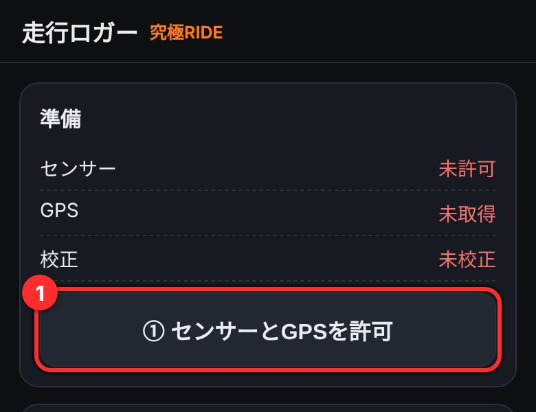
①「センサーとGPSを許可」をタップ →「許可」を選びます。センサーとGPSが緑の「OK」になれば準備OK。GPSは屋外で少し待つと精度が上がります。
3名前・向きを選んで校正する
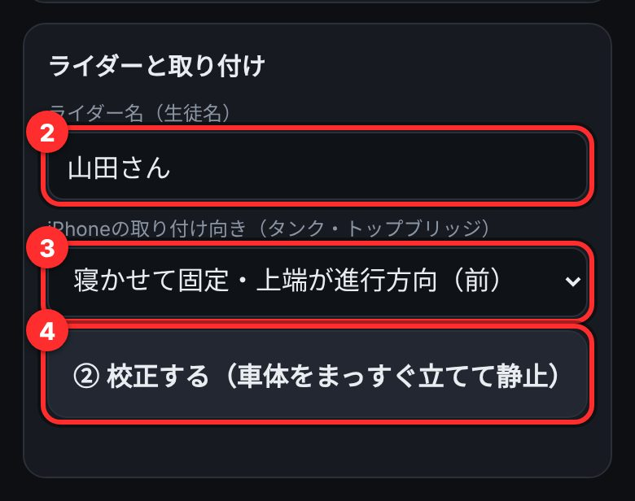
②ライダー名（生徒さんの名前）を入れる
③取り付けた向きを選ぶ（上の図の3通り）
④車体をまっすぐ立てて「校正する」
③取り付けた向きを選ぶ（上の図の3通り）
④車体をまっすぐ立てて「校正する」
4走行形態を選んで記録スタート
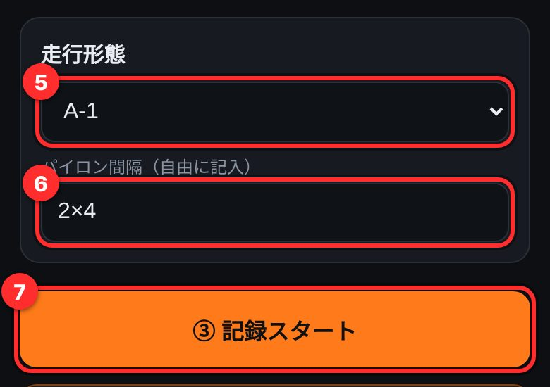
⑤ 走行形態を選ぶ（8の字、A-1〜Cパターン、L字、直パイ、コーススラローム、定常円旋回など）
⑥ パイロン間隔を自由に記入（例：2×4）。コーススラロームと定常円旋回では出ません
⑦ 校正が「OK」になったら「記録スタート」。停車中に押してから走り出します
選んだ形態と間隔は次回も残ります。間違えたら、分析画面の上の「変更」で直せます。
⑥ パイロン間隔を自由に記入（例：2×4）。コーススラロームと定常円旋回では出ません
⑦ 校正が「OK」になったら「記録スタート」。停車中に押してから走り出します
選んだ形態と間隔は次回も残ります。間違えたら、分析画面の上の「変更」で直せます。
記録中は画面をつけたままにしてください。
設定 → 画面表示と明るさ → 自動ロック →「なし」
設定 → 画面表示と明るさ → 自動ロック →「なし」
5記録中の画面と停止
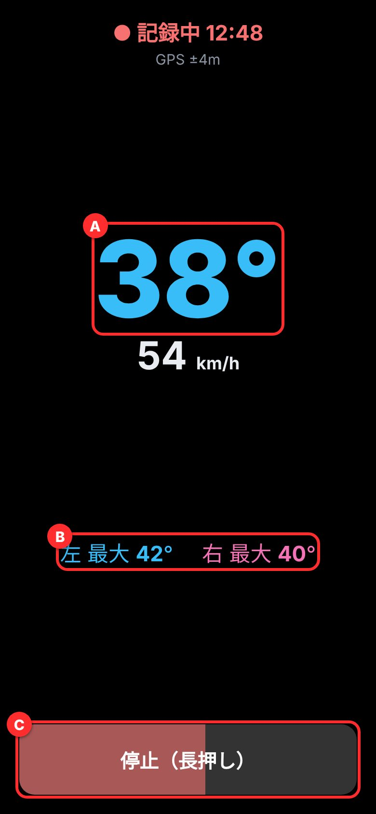
A 今のバンク角（青＝左、ピンク＝右）
B 左右それぞれの最大バンク角
C 停車してから「停止」を1秒長押し。走行中の誤操作を防ぐため、短く押しても止まりません。止めると自動で分析画面が開きます。
走行中は画面を見ずに、運転に集中してください。
B 左右それぞれの最大バンク角
C 停車してから「停止」を1秒長押し。走行中の誤操作を防ぐため、短く押しても止まりません。止めると自動で分析画面が開きます。
走行中は画面を見ずに、運転に集中してください。
分析画面の見方
まとめ
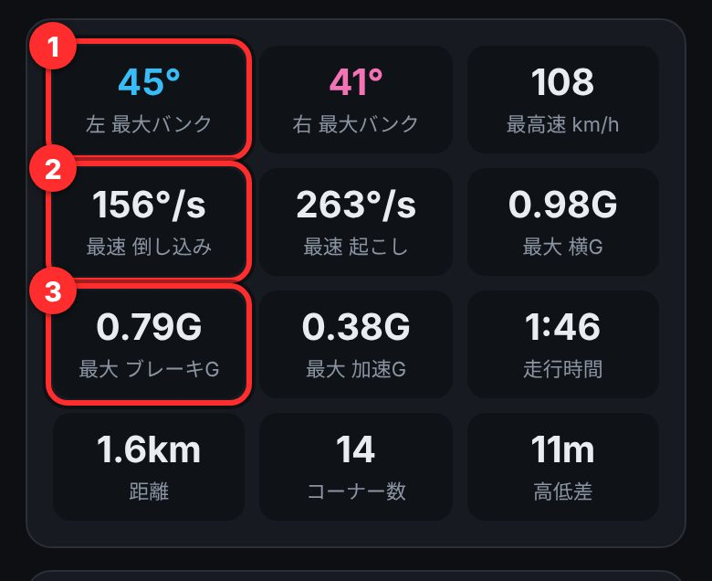
1 左右の最大バンク角
2 倒し込み・起こしの最速（°/s＝1秒あたり何度倒したか）。スイフティーさの目安で、大きいほど素早い
3 ブレーキG・加速G・横Gの最大値。ほかに最高速・走行時間・距離・コーナー数も出ます
2 倒し込み・起こしの最速（°/s＝1秒あたり何度倒したか）。スイフティーさの目安で、大きいほど素早い
3 ブレーキG・加速G・横Gの最大値。ほかに最高速・走行時間・距離・コーナー数も出ます
ルート地図
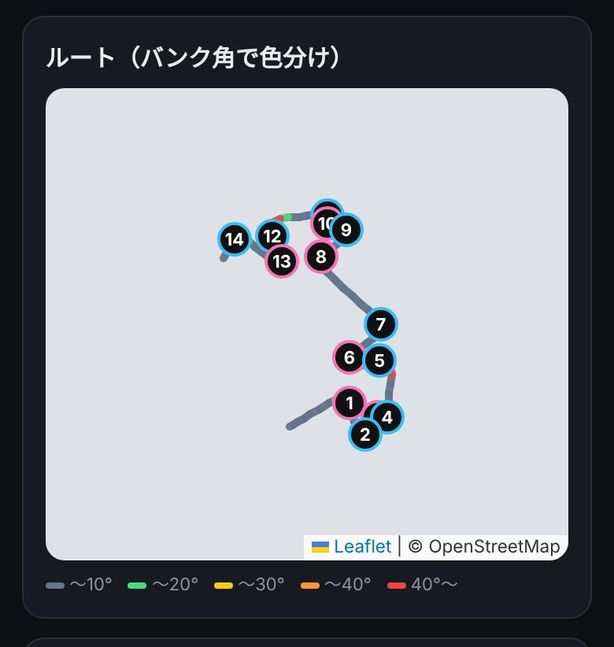
走ったルートをバンク角で色分けします（灰→緑→黄→橙→赤の順に深い）。番号はコーナーで、青枠が左、ピンク枠が右。番号をタップするとそのコーナーにズームします。
※この画像は見本のため地図の背景を省いています
※この画像は見本のため地図の背景を省いています
グラフ
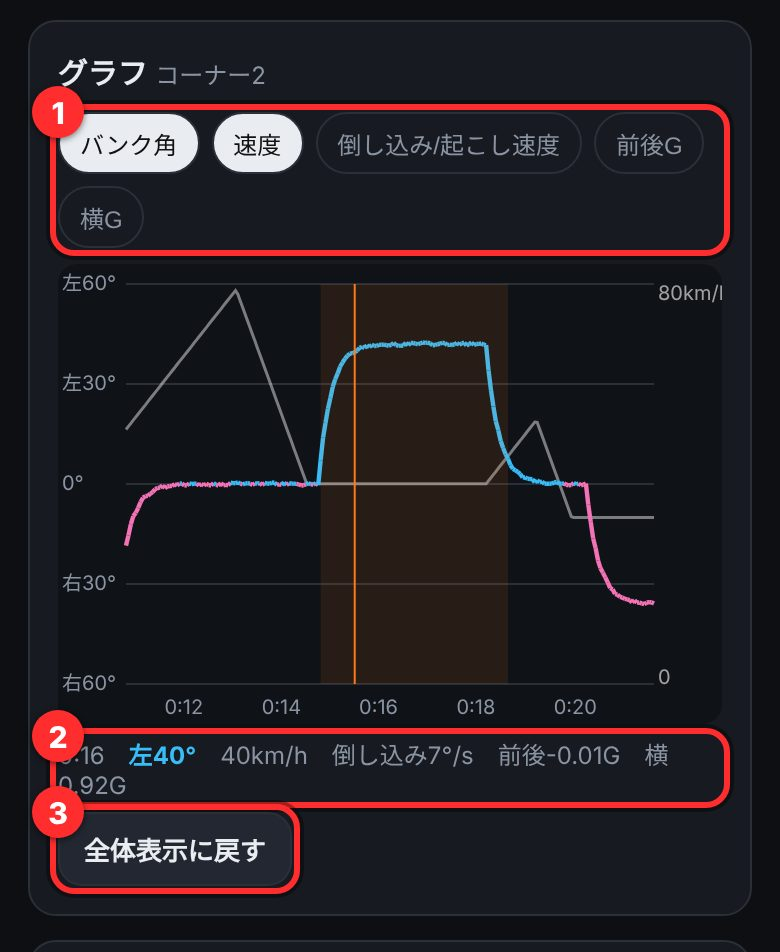
1 表示する項目を切り替え（バンク角・速度・倒し込み/起こし速度・前後G・横G）
2 グラフを指でなぞると、その瞬間の数値が出て、地図にオレンジの点で場所が出ます
3 コーナーを選ぶとそこだけ拡大されます。「全体表示に戻す」で元に戻ります
2 グラフを指でなぞると、その瞬間の数値が出て、地図にオレンジの点で場所が出ます
3 コーナーを選ぶとそこだけ拡大されます。「全体表示に戻す」で元に戻ります
G-G図（摩擦円）
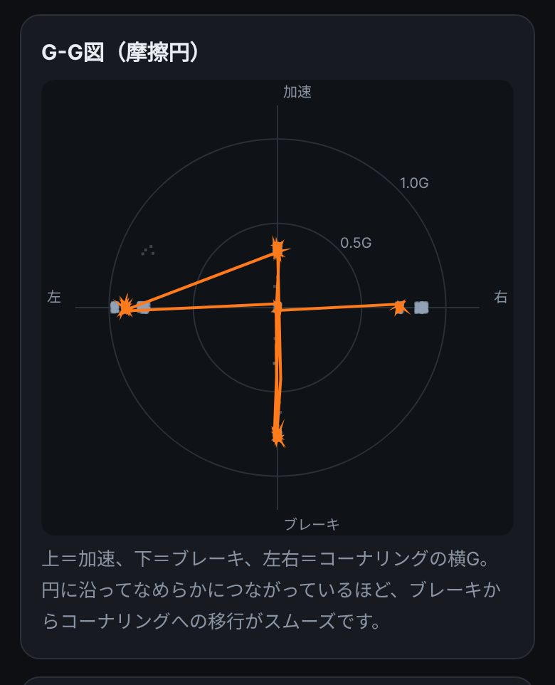
上＝加速、下＝ブレーキ、左右＝コーナリングの横G。コーナーを選ぶとオレンジの線でそのコーナーの動きが出ます。ブレーキ（下）からコーナリング（左右）へ、角ばらずに丸くつながっているほどスムーズです。
コーナー別分析
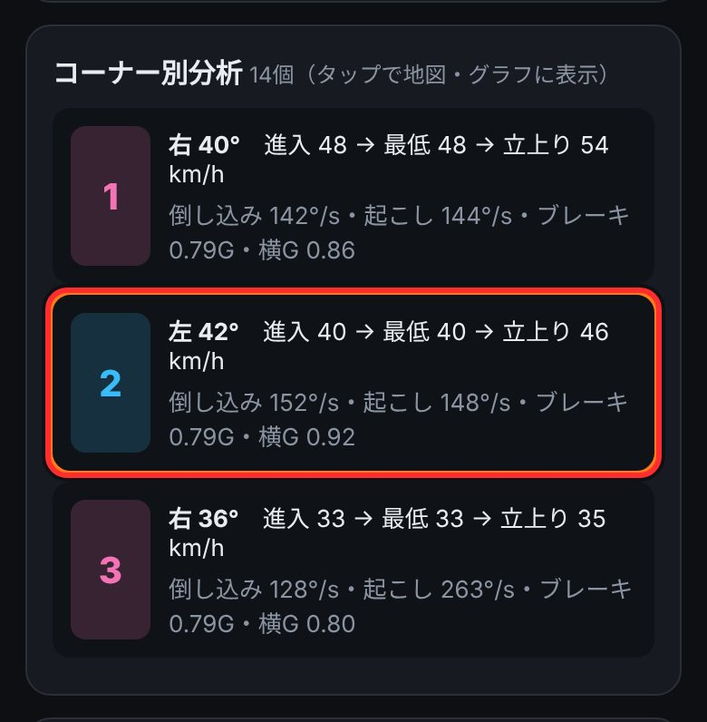
15°以上寝かせたコーナーを自動で見つけて並べます。1行目＝左右と最大バンク角、進入→最低→立ち上がりの速度。2行目＝倒し込み・起こしの速さ、ブレーキG、横G。タップすると地図とグラフがそのコーナーに切り替わります。
過去の記録・ほかの人と比べる
1「履歴」で2つ選ぶ
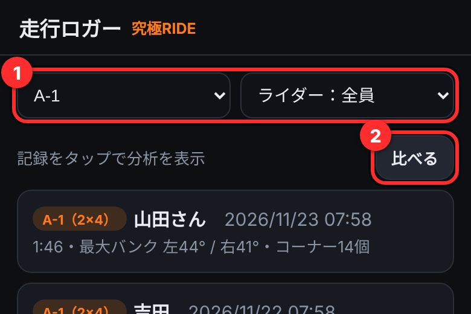
1 走行形態・ライダーで絞り込めます
2「比べる」を押して、記録を2つタップ（1つ目がA＝オレンジ、2つ目がB＝水色）
分析画面の「ほかの記録と比べる」からも始められます。ほかの人の記録は、共有用データを読み込めば比べられます。
2「比べる」を押して、記録を2つタップ（1つ目がA＝オレンジ、2つ目がB＝水色）
分析画面の「ほかの記録と比べる」からも始められます。ほかの人の記録は、共有用データを読み込めば比べられます。
2比較画面の見方
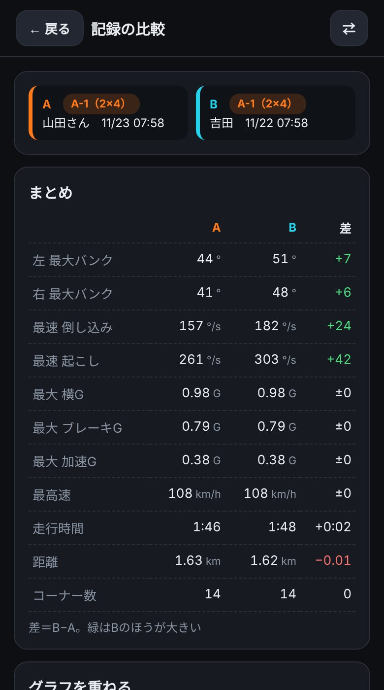
まとめの数字を並べて、差（B−A）を出します。緑はBのほうが大きい、赤は小さい。右上の「⇄」でAとBを入れ替えられます。
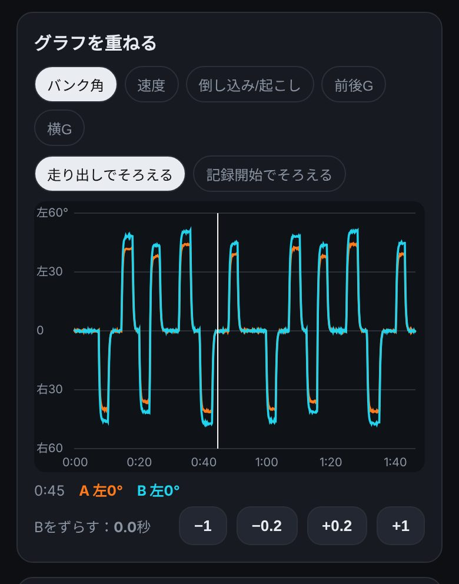
バンク角・速度などの波形を重ねます。最初は「走り出し」（時速5km/hを超えたところ）でそろえて表示します。ずれているときは「Bをずらす」で合わせてください。なぞると同じ瞬間のAとBの数値が出ます。下にはG-G図とGPSのラインも重ねて表示します。
生徒さん → 先生へデータを送る
1生徒さん：分析画面の一番下で書き出す
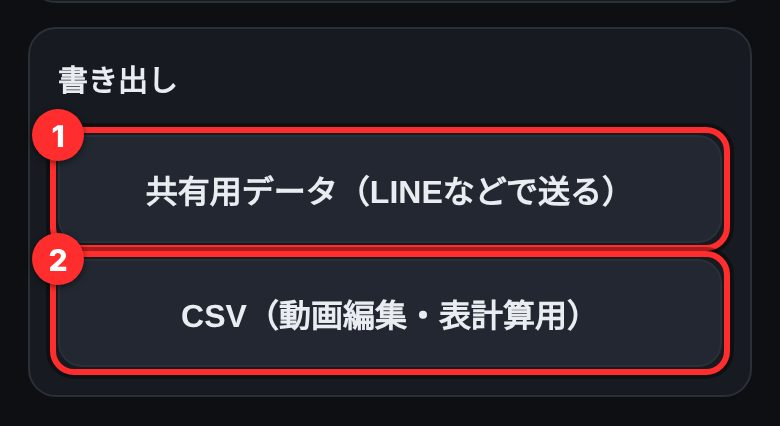
1「共有用データ」→ 共有メニューで LINE を選んで先生に送る
2「CSV」は動画編集や表計算ソフト用です（先生のアプリでは読み込めません）
2「CSV」は動画編集や表計算ソフト用です（先生のアプリでは読み込めません）
2先生：LINEで受け取ったファイルを読み込む
LINEのファイルを開き、共有ボタン →「"ファイル"に保存」。走行ロガーの「履歴」タブ下の「共有データを読み込む」から、保存したファイルを選びます。
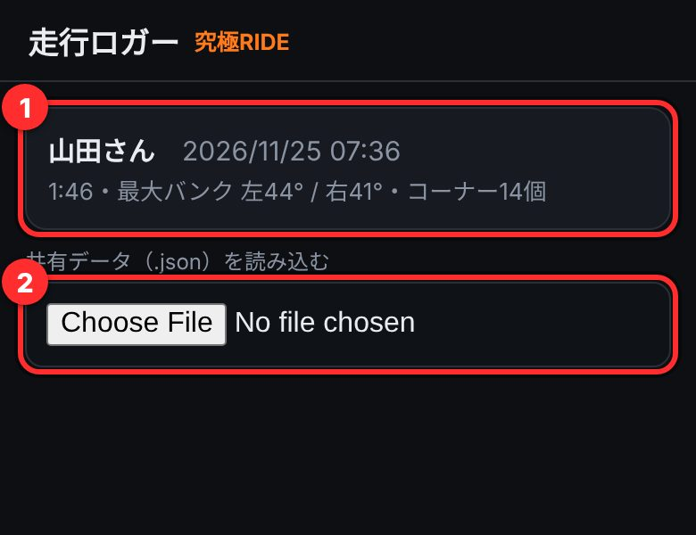
1 記録の一覧。タップで分析が開きます
2 ここから共有データ（.json）を読み込みます
2 ここから共有データ（.json）を読み込みます
注意点・うまくいかないとき
「センサー」が反応なし・未許可のまま
Safariで開いてください（LINEの中のブラウザでは動かないことがあります）。一度「許可しない」を選んだ場合は、アプリを閉じて開き直すか、設定 → アプリ → Safari →「モーションと画面の向きのアクセス」をオンにします。
GPSがなかなか「OK」にならない
屋外の空が見える場所で1〜2分待ちます。設定 → プライバシーとセキュリティ → 位置情報サービスで、Safariの位置情報が「使用中のみ許可」かつ「正確な位置情報」オンか確認してください。
「揺れています」「向きの選択が合っていない」と出る
エンジンを切ってスタンドで静止させ、もう一度。「向きが合っていない」は、選んだ向きと実際の取り付けが違うときに出ます（上の図で確認）。
記録が途中で途切れた
画面が消えると記録が止まります。自動ロックを「なし」に。電話の着信や他のアプリを開いた場合も途切れます。分析画面に途切れた回数が表示されます。
左右が逆・数値が体感と違う
左右はGPSで曲がった向きから自動で判定するので、コーナーが少ない短い記録だと間違うことがあります。取り付けがずれた・校正後に向きを変えた場合も狂います。体感と違うときは、記録画面の「左 最大／右 最大」の数字を吉田までお知らせください。
記録が保存されなかった
5秒より短い記録は保存しません。また、記録はそのiPhoneの中だけに保存されます。Safariの履歴やWebサイトデータを消すと記録も消えるので、残したいものは「共有用データ」で書き出しておいてください。
精度の目安・制限
・バンク角は±2〜3°程度の誤差を見込んでください。極低速（約9km/h以下）では補正が効かず精度が落ちます
・Webアプリのため気圧計は使えません（標高はGPSの値を使用）
・GPSの更新は1秒に1回程度。ライン取りは数メートルの誤差があります
・バッテリーを多く使うので、長時間の記録ではモバイルバッテリーがおすすめです
・Webアプリのため気圧計は使えません（標高はGPSの値を使用）
・GPSの更新は1秒に1回程度。ライン取りは数メートルの誤差があります
・バッテリーを多く使うので、長時間の記録ではモバイルバッテリーがおすすめです